Статистика обращений к greenbro.net
Статистика обращений к greenbro.net
Программа стартовала в ср. 30 янв 2019 17:47.
Анализ обращений к серверу с пн. 3 дек 2018 22:13 по ср. 30 янв 2019 14:00 (57,66 дней).
Статистика обращений к greenbro.netПрограмма стартовала в ср. 30 янв 2019 17:47.
Анализ обращений к серверу с пн. 3 дек 2018 22:13 по ср. 30 янв 2019 14:00 (57,66 дней).
(Переход: Вверх | Основная Информация | Статистика по месяцам | Статистика по дням недели | Статистика по времени суток | Статистика по доменам | Статистика по организациям | Статистика по перенаправляющим ссылкам | Статистика отказов по ссылкам | Статистика по ссылающимся сайтам | Статистика по браузерам (подробная) | Статистика по браузерам (суммарная) | Статистика по операционным системам | Статистика по коду возврата | Статистика по размерам файлов | Статистика по типам файлов | Статистика по директориям | Статистика по запросам)
Запись в круглых скобках - данные за 7 дней до 30 янв 2019 17:47.
Успешных обращений: 1 027 (104)
Среднее кол. успешных обращений в день: 17 (14)
Успешных обращений к страницам: 703 (104)
Среднее кол. успешных обращений к страницам в день: 12 (14)
Неуспешных запросов: 1 887 (18)
Перенаправленных запросов: 272 (0)
Количество запрошенных файлов: 28 (650)
Количество обслуженных хостов: 444 (833)
Данных передано: 1,54 мегабайт (31,17 килобайт)
Среднее кол. переданных данных в день: 27,31 килобайт (4,45 килобайт)
(Переход: Вверх | Основная Информация | Статистика по месяцам | Статистика по дням недели | Статистика по времени суток | Статистика по доменам | Статистика по организациям | Статистика по перенаправляющим ссылкам | Статистика отказов по ссылкам | Статистика по ссылающимся сайтам | Статистика по браузерам (подробная) | Статистика по браузерам (суммарная) | Статистика по операционным системам | Статистика по коду возврата | Статистика по размерам файлов | Статистика по типам файлов | Статистика по директориям | Статистика по запросам)
Каждый символ ( ) отображает 15 обращений к страницам или около этого.
) отображает 15 обращений к страницам или около этого.
| месяц | запросы | страниц | |
|---|---|---|---|
| дек 2018 | 584 | 372 |   |
| янв 2019 | 443 | 331 |   |
Наибольшее количество обращений в дек 2018 (372 обращений к страницам).
(Переход: Вверх | Основная Информация | Статистика по месяцам | Статистика по дням недели | Статистика по времени суток | Статистика по доменам | Статистика по организациям | Статистика по перенаправляющим ссылкам | Статистика отказов по ссылкам | Статистика по ссылающимся сайтам | Статистика по браузерам (подробная) | Статистика по браузерам (суммарная) | Статистика по операционным системам | Статистика по коду возврата | Статистика по размерам файлов | Статистика по типам файлов | Статистика по директориям | Статистика по запросам)
Каждый символ () отображает 4 обращений к страницам или около этого.
| день | запросы | страниц | |
|---|---|---|---|
| вс. | 119 | 84 | |
| пн. | 164 | 143 |  |
| вт. | 134 | 99 | |
| ср. | 173 | 116 | |
| чт. | 143 | 85 | |
| пт. | 132 | 81 | |
| сб. | 162 | 95 | |
(Переход: Вверх | Основная Информация | Статистика по месяцам | Статистика по дням недели | Статистика по времени суток | Статистика по доменам | Статистика по организациям | Статистика по перенаправляющим ссылкам | Статистика отказов по ссылкам | Статистика по ссылающимся сайтам | Статистика по браузерам (подробная) | Статистика по браузерам (суммарная) | Статистика по операционным системам | Статистика по коду возврата | Статистика по размерам файлов | Статистика по типам файлов | Статистика по директориям | Статистика по запросам)
Каждый символ () отображает 3 обращений к страницам или около этого.
| час | запросы | страниц | |
|---|---|---|---|
| 0 | 28 | 14 | |
| 1 | 33 | 27 | |
| 2 | 29 | 20 | |
| 3 | 43 | 39 | |
| 4 | 33 | 28 | |
| 5 | 34 | 26 | |
| 6 | 30 | 23 | |
| 7 | 45 | 27 | |
| 8 | 28 | 21 | |
| 9 | 53 | 27 | |
| 10 | 57 | 43 | |
| 11 | 34 | 25 | |
| 12 | 26 | 20 | |
| 13 | 38 | 21 | |
| 14 | 36 | 23 | |
| 15 | 46 | 30 | |
| 16 | 23 | 15 | |
| 17 | 16 | 10 | |
| 18 | 50 | 23 | |
| 19 | 9 | 6 | |
| 20 | 48 | 25 | |
| 21 | 109 | 85 | |
| 22 | 124 | 83 | |
| 23 | 55 | 42 | |
(Переход: Вверх | Основная Информация | Статистика по месяцам | Статистика по дням недели | Статистика по времени суток | Статистика по доменам | Статистика по организациям | Статистика по перенаправляющим ссылкам | Статистика отказов по ссылкам | Статистика по ссылающимся сайтам | Статистика по браузерам (подробная) | Статистика по браузерам (суммарная) | Статистика по операционным системам | Статистика по коду возврата | Статистика по размерам файлов | Статистика по типам файлов | Статистика по директориям | Статистика по запросам)
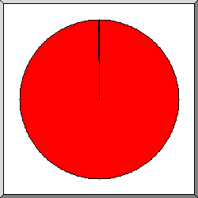
Поделено на сектора по суммарному трафику.
 [нераспознанный IP-адрес]
[нераспознанный IP-адрес]
Список доменов, отсортировано по суммарному трафику.
| запросы | %байт | домен |
|---|---|---|
| 1025 | 99,95% | [нераспознанный IP-адрес] |
| 2 | 0,05% | .com (Комерческий домен) |
(Переход: Вверх | Основная Информация | Статистика по месяцам | Статистика по дням недели | Статистика по времени суток | Статистика по доменам | Статистика по организациям | Статистика по перенаправляющим ссылкам | Статистика отказов по ссылкам | Статистика по ссылающимся сайтам | Статистика по браузерам (подробная) | Статистика по браузерам (суммарная) | Статистика по операционным системам | Статистика по коду возврата | Статистика по размерам файлов | Статистика по типам файлов | Статистика по директориям | Статистика по запросам)
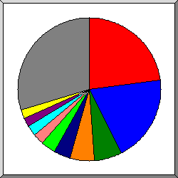
Поделено на сектора по количеству обращений.
106
 123
123
 95
95
 180.76
180.76
 216.244
216.244
 42
42
 141.8
141.8
 40
40
 46
46
 37
37
 другое
другое
Показано первые 20 организаций - по количеству обращений, отсортировано по количеству обращений.
| запросы | %байт | организация |
|---|---|---|
| 141 | 13,26% | 106 |
| 87 | 14,20% | 123 |
| 74 | 4,40% | 95 |
| 59 | 2,37% | 180.76 |
| 56 | 26,33% | 216.244 |
| 54 | 1,73% | 42 |
| 41 | 1,35% | 141.8 |
| 39 | 8,08% | 40 |
| 34 | 3,30% | 46 |
| 33 | 0,25% | 37 |
| 31 | 1,45% | 5 |
| 31 | 1,06% | 66.249 |
| 25 | 1,01% | 52 |
| 25 | 6,00% | 36 |
| 24 | 0,53% | 218.30 |
| 21 | 2,06% | 111 |
| 20 | 1,09% | 54 |
| 14 | 0,51% | 167.114 |
| 11 | 109 | |
| 10 | 0,16% | 209.95 |
| 197 | 10,88% | [не распознано: 69 организаций] |
(Переход: Вверх | Основная Информация | Статистика по месяцам | Статистика по дням недели | Статистика по времени суток | Статистика по доменам | Статистика по организациям | Статистика по перенаправляющим ссылкам | Статистика отказов по ссылкам | Статистика по ссылающимся сайтам | Статистика по браузерам (подробная) | Статистика по браузерам (суммарная) | Статистика по операционным системам | Статистика по коду возврата | Статистика по размерам файлов | Статистика по типам файлов | Статистика по директориям | Статистика по запросам)
Список ссылающихся URLей, отсортировано количество перенаправленных запросов.
| запросы | URL |
|---|---|
| 1 | http://www.greenbro.net/ |
(Переход: Вверх | Основная Информация | Статистика по месяцам | Статистика по дням недели | Статистика по времени суток | Статистика по доменам | Статистика по организациям | Статистика по перенаправляющим ссылкам | Статистика отказов по ссылкам | Статистика по ссылающимся сайтам | Статистика по браузерам (подробная) | Статистика по браузерам (суммарная) | Статистика по операционным системам | Статистика по коду возврата | Статистика по размерам файлов | Статистика по типам файлов | Статистика по директориям | Статистика по запросам)
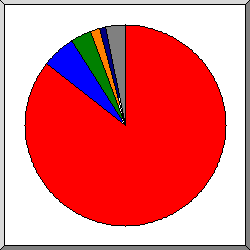
Поделено на сектора по количеству отказов.
http://greenbro.net/wp-login.php
http://greenbro.net/phpmyadmin/index.php
http://greenbro.net/
http://www.google.com.hk/
http://www.greenbro.net/
другое
Список ссылающихся URLs, отсортировано по количеству отказов.
(Переход: Вверх | Основная Информация | Статистика по месяцам | Статистика по дням недели | Статистика по времени суток | Статистика по доменам | Статистика по организациям | Статистика по перенаправляющим ссылкам | Статистика отказов по ссылкам | Статистика по ссылающимся сайтам | Статистика по браузерам (подробная) | Статистика по браузерам (суммарная) | Статистика по операционным системам | Статистика по коду возврата | Статистика по размерам файлов | Статистика по типам файлов | Статистика по директориям | Статистика по запросам)
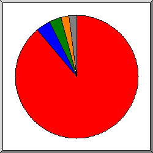
Поделено на сектора по количеству обращений.
http://www.sogou.com/
http://greenbro.net/
http://www.greenbro.net/
https://uptime.com/
http://mail.greenbro.net/
другое
Список ссылающихся сайтов, отсортировано по количеству обращений.
| запросы | сайт |
|---|---|
| 102 | http://www.sogou.com/ |
| 91 | http://greenbro.net/ |
| 48 | http://www.greenbro.net/ |
| 26 | https://uptime.com/ |
| 5 | http://mail.greenbro.net/ |
| 2 | https://www.facebook.com/ |
| 2 | http://pizza-imperia.com/ |
| 1 | http://burger-imperia.com/ |
| 1 | http://www.marinetraffic.com/ |
| 1 | http://search.aol.com/ |
| 1 | https://www.google.com/ |
(Переход: Вверх | Основная Информация | Статистика по месяцам | Статистика по дням недели | Статистика по времени суток | Статистика по доменам | Статистика по организациям | Статистика по перенаправляющим ссылкам | Статистика отказов по ссылкам | Статистика по ссылающимся сайтам | Статистика по браузерам (подробная) | Статистика по браузерам (суммарная) | Статистика по операционным системам | Статистика по коду возврата | Статистика по размерам файлов | Статистика по типам файлов | Статистика по директориям | Статистика по запросам)
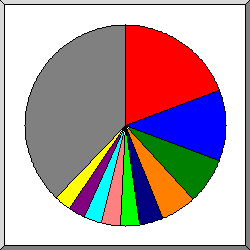
Поделено на сектора по количеству обращений к странице.
Sogou web spider/4.0(+http://www.sogou.com/docs/help/webmasters.htm#07)
Mozilla/5.0 (compatible; YandexBot/3.0; +http://yandex.com/bots)
Mozilla/5.0 (compatible; Baiduspider/2.0; +http://www.baidu.com/search/spider.html)
Mozilla/5.0 (compatible; MJ12bot/v1.4.8; http://mj12bot.com/)
Mozilla/5.0 (Linux; Android 7.1.1; SM-J510H Build/NMF26X) AppleWebKit/537.36 (KHTML, like Gecko) Chrome/60.0.3112.116 Mobile Safari/537.36
Mozilla/5.0 (Windows NT 6.1; WOW64) AppleWebKit/537.36 (KHTML, like Gecko) Chrome/50.0.2661.102 Safari/537.36; 360Spider
Mozilla/5.0 (compatible; Uptimebot/1.0; +http://www.uptime.com/uptimebot)
Mozilla/5.0 (compatible; AhrefsBot/5.2; +http://ahrefs.com/robot/)
Mozilla/5.0 (Macintosh; Intel Mac OS X 10_12_6) AppleWebKit/537.36 (KHTML, like Gecko) Chrome/61.0.3163.100 Safari/537.36
Mozilla/4.0 (compatible; MSIE 7.0; Windows NT 5.1; Trident/4.0; SE 2.X MetaSr 1.0; SE 2.X MetaSr 1.0; .NET CLR 2.0.50727; SE 2.X MetaSr 1.0)
другое
Показано первые 40 браузеров - по количеству обращений к странице, отсортировано по количеству обращений к странице.
| запросы | страниц | браузер |
|---|---|---|
| 162 | 155 | Sogou web spider/4.0(+http://www.sogou.com/docs/help/webmasters.htm#07) |
| 93 | 89 | Mozilla/5.0 (compatible; YandexBot/3.0; +http://yandex.com/bots) |
| 57 | 47 | Mozilla/5.0 (compatible; Baiduspider/2.0; +http://www.baidu.com/search/spider.html) |
| 32 | 32 | Mozilla/5.0 (compatible; MJ12bot/v1.4.8; http://mj12bot.com/) |
| 70 | 30 | Mozilla/5.0 (Linux; Android 7.1.1; SM-J510H Build/NMF26X) AppleWebKit/537.36 (KHTML, like Gecko) Chrome/60.0.3112.116 Mobile Safari/537.36 |
| 30 | 29 | Mozilla/5.0 (Windows NT 6.1; WOW64) AppleWebKit/537.36 (KHTML, like Gecko) Chrome/50.0.2661.102 Safari/537.36; 360Spider |
| 26 | 26 | Mozilla/5.0 (compatible; Uptimebot/1.0; +http://www.uptime.com/uptimebot) |
| 23 | 23 | Mozilla/5.0 (compatible; AhrefsBot/5.2; +http://ahrefs.com/robot/) |
| 24 | 22 | Mozilla/5.0 (Macintosh; Intel Mac OS X 10_12_6) AppleWebKit/537.36 (KHTML, like Gecko) Chrome/61.0.3163.100 Safari/537.36 |
| 102 | 22 | Mozilla/4.0 (compatible; MSIE 7.0; Windows NT 5.1; Trident/4.0; SE 2.X MetaSr 1.0; SE 2.X MetaSr 1.0; .NET CLR 2.0.50727; SE 2.X MetaSr 1.0) |
| 21 | 20 | Mozilla/5.0 (compatible; Googlebot/2.1; +http://www.google.com/bot.html) |
| 12 | 12 | Mozilla/5.0 (compatible; Dataprovider.com) |
| 13 | 12 | Mozilla/5.0 (iPhone; CPU iPhone OS 7_0 like Mac OS X) AppleWebKit/537.51.1 (KHTML, like Gecko) Version/7.0 Mobile/11A465 Safari/9537.53 (compatible; bingbot/2.0; +http://www.bing.com/bingbot.htm) |
| 10 | 10 | Mozilla/5.0 (compatible; MegaIndex.ru/2.0; +http://megaindex.com/crawler) |
| 15 | 10 | Mozilla/5.0 (Macintosh; Intel Mac OS X 10_9_2) AppleWebKit/537.36 (KHTML, like Gecko) Chrome/38.0.2125.111 Safari/537.36 |
| 10 | 10 | Mozilla/5.0 (Windows NT 6.1; rv:38.0) Gecko/20100101 Firefox/38.0 (IndeedBot 1.1) |
| 8 | 8 | panscient.com |
| 9 | 8 | Mozilla/5.0 (Windows NT 10.0; WOW64) AppleWebKit/537.36 (KHTML, like Gecko) Chrome/66.0.3359.117 Safari/537.36 |
| 9 | 7 | Mozilla/5.0 (Windows NT 6.1) AppleWebKit/537.36 (KHTML, like Gecko) Chrome/42.0.2311.90 Safari/537.36 |
| 9 | 7 | Mozilla/5.0 (Macintosh; Intel Mac OS X 10.11; rv:47.0) Gecko/20100101 Firefox/47.0 |
| 9 | 6 | Mozilla/5.0 (Linux; Android 6.0.1; Nexus 5X Build/MMB29P) AppleWebKit/537.36 (KHTML, like Gecko) Chrome/41.0.2272.96 Mobile Safari/537.36 (compatible; Googlebot/2.1; +http://www.google.com/bot.html) |
| 5 | 5 | PHPCrawl |
| 4 | 4 | Mozilla/5.0 (Windows NT 10.0; Win64; x64) AppleWebKit/537.36 (KHTML, like Gecko) Chrome/63.0.3239.132 Safari/537.36 |
| 4 | 4 | Mozilla/5.0 (X11; Ubuntu; Linux x86_64) AppleWebKit/537.36 (KHTML, like Gecko) Chrome/60.0.3112.101 Safari/537.36 |
| 4 | 4 | CATExplorador/1.0beta (sistemes at domini dot cat; http://domini.cat/catexplorador.html) |
| 4 | 4 | Mozilla/5.0 (Macintosh; Intel Mac OS X 10_9_3) AppleWebKit/537.36 (KHTML, like Gecko) Chrome/35.0.1916.47 Safari/537.36 |
| 3 | 3 | Mozilla/5.0 (Windows NT 6.1; WOW64) AppleWebKit/537.36 (KHTML, like Gecko) Chrome/41.0.2272.89 Safari/537.36 |
| 3 | 3 | Mozilla/5.0 (compatible; bingbot/2.0; +http://www.bing.com/bingbot.htm) |
| 3 | 3 | Mozilla/5.0 (Windows NT 6.1; WOW64) AppleWebKit/537.36 (KHTML, like Gecko) Chrome/34.0.1847.131 Safari/537.36 |
| 3 | 3 | Mozilla/5.0 (X11; Linux x86_64) AppleWebKit/537.36 (KHTML, like Gecko) Chrome/58.0.3029.110 Safari/537.36 |
| 3 | 3 | Mozilla/5.0 (compatible; Nimbostratus-Bot/v1.3.2; http://cloudsystemnetworks.com) |
| 2 | 2 | Mozilla/5.0 (Windows NT 6.1; WOW64; rv:46.0) Gecko/20100101 Firefox/46.0 |
| 2 | 2 | Mozilla/5.0 (Windows NT 10.0; Win64; x64) AppleWebKit/537.36 (KHTML, like Gecko) Chrome/65.0.3325.181 Safari/537.36 |
| 2 | 2 | Mozilla/5.0 (Windows NT 10.0; Win64; x64) AppleWebKit/537.36 (KHTML, like Gecko) Chrome/68.0.3440.84 Safari/537.36 |
| 3 | 2 | Mozilla/4.0 (compatible; MSIE 7.0; Windows NT 5.2) |
| 2 | 2 | Mozilla/5.0 (Macintosh; Intel Mac OS X 10_14_2) AppleWebKit/605.1.15 (KHTML, like Gecko) Version/12.0.2 Safari/605.1.15 |
| 2 | 2 | Mozilla/5.0 (Windows; U; Windows NT 5.1; en-US; rv:1.9.0.1) Gecko/2008070208 Firefox/3.0.1 |
| 2 | 2 | Mozilla/4.0 (compatible; MSIE 8.0; Windows NT 6.0) |
| 2 | 2 | Mozilla/5.0 (Windows NT 6.1; WOW64; rv:40.0) Gecko/20100101 Firefox/40.1 |
| 2 | 2 | Mozilla/5.0 (Linux; Android 5.1.1; SM-G925F Build/LMY47X) AppleWebKit/537.36 (KHTML, like Gecko) Chrome/45.0.2454.94 Mobile Safari/537.36 |
| 221 | 57 | [не распознано: 58 браузеров] |
(Переход: Вверх | Основная Информация | Статистика по месяцам | Статистика по дням недели | Статистика по времени суток | Статистика по доменам | Статистика по организациям | Статистика по перенаправляющим ссылкам | Статистика отказов по ссылкам | Статистика по ссылающимся сайтам | Статистика по браузерам (подробная) | Статистика по браузерам (суммарная) | Статистика по операционным системам | Статистика по коду возврата | Статистика по размерам файлов | Статистика по типам файлов | Статистика по директориям | Статистика по запросам)
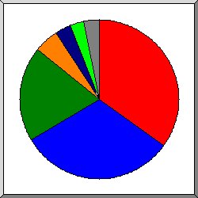
Поделено на сектора по количеству обращений к странице.
Netscape (compatible)
Safari
Sogou web spider
Firefox
MSIE
panscient.com
другое
Список браузеров на которые приходиться, как минимум 1 обращение к странице, отсортировано по количеству обращений к странице.
| N | запросы | страниц | браузер |
|---|---|---|---|
| 1 | 353 | 268 | Netscape (compatible) |
| 2 | 287 | 175 | Safari |
| 235 | 159 | Safari/537 | |
| 48 | 12 | Safari/9537 | |
| 2 | 2 | Safari/605 | |
| 1 | 1 | Safari/535 | |
| 1 | 1 | Safari/532 | |
| 3 | 162 | 155 | Sogou web spider |
| 162 | 155 | Sogou web spider/4 | |
| 4 | 41 | 36 | Firefox |
| 10 | 10 | Firefox/38 | |
| 9 | 7 | Firefox/47 | |
| 3 | 3 | Firefox/50 | |
| 2 | 2 | Firefox/40 | |
| 2 | 2 | Firefox/46 | |
| 2 | 2 | Firefox/49 | |
| 2 | 2 | Firefox/59 | |
| 2 | 2 | Firefox/3 | |
| 1 | 1 | Firefox/62 | |
| 1 | 1 | Firefox/53 | |
| 5 | 144 | 29 | MSIE |
| 139 | 24 | MSIE/7 | |
| 2 | 2 | MSIE/8 | |
| 1 | 1 | MSIE/9 | |
| 1 | 1 | MSIE/6 | |
| 6 | 8 | 8 | panscient.com |
| 7 | 5 | 5 | PHPCrawl |
| 8 | 4 | 4 | CATExplorador |
| 4 | 4 | CATExplorador/1 | |
| 9 | 4 | 4 | Mozilla |
| 2 | 2 | Mozilla/1 | |
| 10 | 2 | 2 | python-requests |
| 2 | 2 | python-requests/2 | |
| 11 | 2 | 2 | Scrapy |
| 2 | 2 | Scrapy/1 | |
| 12 | 2 | 2 | CheckMarkNetwork |
| 2 | 2 | CheckMarkNetwork/1 | |
| 13 | 2 | 2 | SafeDNSBot (https: |
| 2 | 2 | SafeDNSBot (https://www | |
| 14 | 1 | 1 | GuzzleHttp |
| 1 | 1 | GuzzleHttp/6 | |
| 15 | 1 | 1 | Python |
| 1 | 1 | Python/3 | |
| 16 | 1 | 1 | PHP-Curl-Class |
| 1 | 1 | PHP-Curl-Class/8 | |
| 17 | 1 | 1 | Wget |
| 1 | 1 | Wget/1 |
(Переход: Вверх | Основная Информация | Статистика по месяцам | Статистика по дням недели | Статистика по времени суток | Статистика по доменам | Статистика по организациям | Статистика по перенаправляющим ссылкам | Статистика отказов по ссылкам | Статистика по ссылающимся сайтам | Статистика по браузерам (подробная) | Статистика по браузерам (суммарная) | Статистика по операционным системам | Статистика по коду возврата | Статистика по размерам файлов | Статистика по типам файлов | Статистика по директориям | Статистика по запросам)
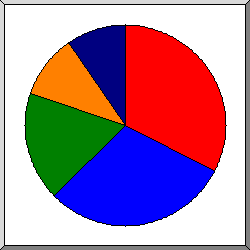
Поделено на сектора по количеству обращений к странице.
роботы
Неизвестная ОС
Windows
Macintosh
Unix
Список операционных систем, отсортировано по количеству обращений к странице.
| N | запросы | страниц | ОС |
|---|---|---|---|
| 1 | 286 | 266 | роботы |
| 2 | 291 | 214 | Неизвестная ОС |
| 3 | 230 | 98 | Windows |
| 82 | 45 | Неизвестная Windows-система | |
| 118 | 30 | Windows XP | |
| 27 | 21 | Windows NT | |
| 3 | 2 | Windows Server 2003 | |
| 4 | 110 | 65 | Macintosh |
| 5 | 103 | 53 | Unix |
| 103 | 53 | Linux |
(Переход: Вверх | Основная Информация | Статистика по месяцам | Статистика по дням недели | Статистика по времени суток | Статистика по доменам | Статистика по организациям | Статистика по перенаправляющим ссылкам | Статистика отказов по ссылкам | Статистика по ссылающимся сайтам | Статистика по браузерам (подробная) | Статистика по браузерам (суммарная) | Статистика по операционным системам | Статистика по коду возврата | Статистика по размерам файлов | Статистика по типам файлов | Статистика по директориям | Статистика по запросам)

Поделено на сектора по количеству обращений.
200 OK
302 Document found elsewhere
304 Not modified since last retrieval
404 Document not found
Список кодов возврата, отсортированный по порядковым номерам.
| запросы | код статус |
|---|---|
| 935 | 200 OK |
| 272 | 302 Document found elsewhere |
| 92 | 304 Not modified since last retrieval |
| 1887 | 404 Document not found |
(Переход: Вверх | Основная Информация | Статистика по месяцам | Статистика по дням недели | Статистика по времени суток | Статистика по доменам | Статистика по организациям | Статистика по перенаправляющим ссылкам | Статистика отказов по ссылкам | Статистика по ссылающимся сайтам | Статистика по браузерам (подробная) | Статистика по браузерам (суммарная) | Статистика по операционным системам | Статистика по коду возврата | Статистика по размерам файлов | Статистика по типам файлов | Статистика по директориям | Статистика по запросам)
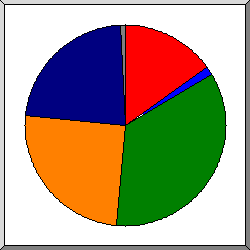
Поделено на сектора по количеству обращений.
0
101B- 1kB
1kB- 10kB
| размер | запросы | %байт |
|---|---|---|
| 0 | 122 | |
| 1B- 10B | 0 | |
| 11B- 100B | 0 | |
| 101B- 1kB | 567 | 12,64% |
| 1kB- 10kB | 338 | 87,36% |
(Переход: Вверх | Основная Информация | Статистика по месяцам | Статистика по дням недели | Статистика по времени суток | Статистика по доменам | Статистика по организациям | Статистика по перенаправляющим ссылкам | Статистика отказов по ссылкам | Статистика по ссылающимся сайтам | Статистика по браузерам (подробная) | Статистика по браузерам (суммарная) | Статистика по операционным системам | Статистика по коду возврата | Статистика по размерам файлов | Статистика по типам файлов | Статистика по директориям | Статистика по запросам)
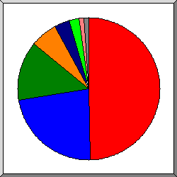
Поделено на сектора по суммарному трафику.
.cgi [CGI scripts]
.png [PNG graphics]
[директории]
.css [Cascading Style Sheets]
Список расширений на которые приходиться, как минимум 0,1% трафика, отсортировано по суммарному трафику.
| запросы | %байт | расширение |
|---|---|---|
| 97 | 38,06% | .cgi [CGI scripts] |
| 130 | 31,35% | .png [PNG graphics] |
| 703 | 15,89% | [директории] |
| 93 | 14,61% | .css [Cascading Style Sheets] |
| 4 | 0,09% | [не распознано: 1 расширение] |
(Переход: Вверх | Основная Информация | Статистика по месяцам | Статистика по дням недели | Статистика по времени суток | Статистика по доменам | Статистика по организациям | Статистика по перенаправляющим ссылкам | Статистика отказов по ссылкам | Статистика по ссылающимся сайтам | Статистика по браузерам (подробная) | Статистика по браузерам (суммарная) | Статистика по операционным системам | Статистика по коду возврата | Статистика по размерам файлов | Статистика по типам файлов | Статистика по директориям | Статистика по запросам)
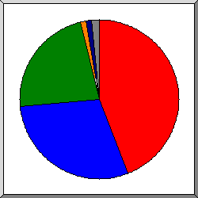
Поделено на сектора по суммарному трафику.
/cgi-sys/
/images/
[корневой каталог]
другое
Список директорий на которые приходиться, как минимум 0,01% трафика, отсортировано по суммарному трафику.
| запросы | %байт | директория |
|---|---|---|
| 97 | 38,06% | /cgi-sys/ |
| 130 | 31,35% | /images/ |
| 786 | 30,29% | [корневой каталог] |
| 11 | 0,23% | /green64/ |
| 3 | 0,06% | /uploads/ |
(Переход: Вверх | Основная Информация | Статистика по месяцам | Статистика по дням недели | Статистика по времени суток | Статистика по доменам | Статистика по организациям | Статистика по перенаправляющим ссылкам | Статистика отказов по ссылкам | Статистика по ссылающимся сайтам | Статистика по браузерам (подробная) | Статистика по браузерам (суммарная) | Статистика по операционным системам | Статистика по коду возврата | Статистика по размерам файлов | Статистика по типам файлов | Статистика по директориям | Статистика по запросам)
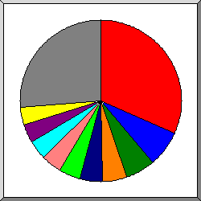
Поделено на сектора по количеству обращений.
/
/cgi-sys/suspendedpage.cgi
/phpMM.css
/images/tmm_php-mysql_footer.png
/images/tmm_php-mysql_example-arrow.png
/images/tmm_php-mysql_background.png
/images/tmm_php-mysql_banner.png
другое
Список файлов на которые приходиться, как минимум 20 запросов, отсортировано по количеству обращений.
| запросы | %байт | последнее время | файл |
|---|---|---|---|
| 689 | 15,60% | 30 янв 19 14:00 | / |
| 12 | 0,21% | 29 янв 19 01:03 | /?C=M;O=A |
| 11 | 0,16% | 23 янв 19 15:06 | /?54.36.148.168 |
| 10 | 0,18% | 29 янв 19 01:03 | /?C=S;O=A |
| 97 | 38,06% | 13 янв 19 11:56 | /cgi-sys/suspendedpage.cgi |
| 93 | 14,61% | 7 янв 19 22:25 | /phpMM.css |
| 34 | 7,52% | 7 янв 19 22:25 | /images/tmm_php-mysql_footer.png |
| 34 | 5,32% | 7 янв 19 22:25 | /images/tmm_php-mysql_example-arrow.png |
| 34 | 4,99% | 7 янв 19 22:25 | /images/tmm_php-mysql_background.png |
| 28 | 13,53% | 7 янв 19 22:25 | /images/tmm_php-mysql_banner.png |
| 18 | 0,39% | 30 янв 19 13:13 | [не распознано: 6 файлов] |